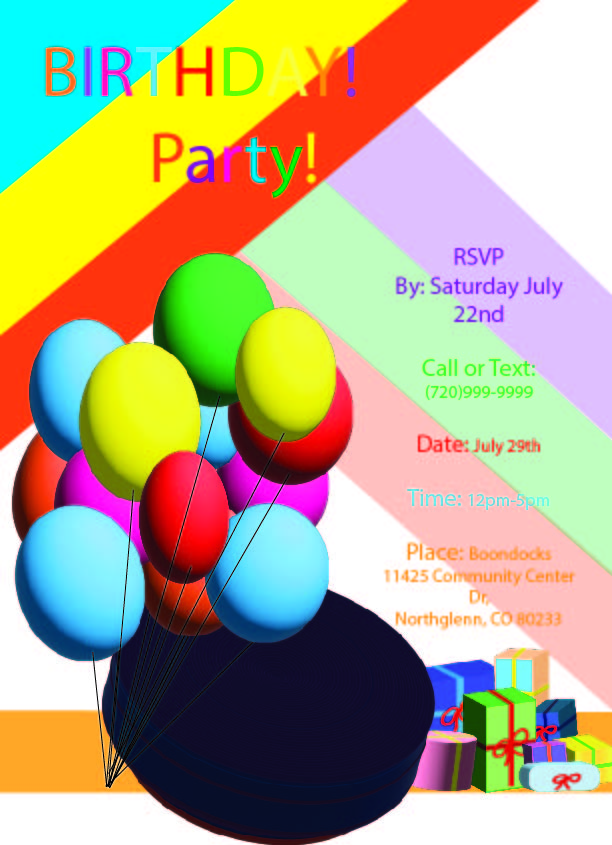
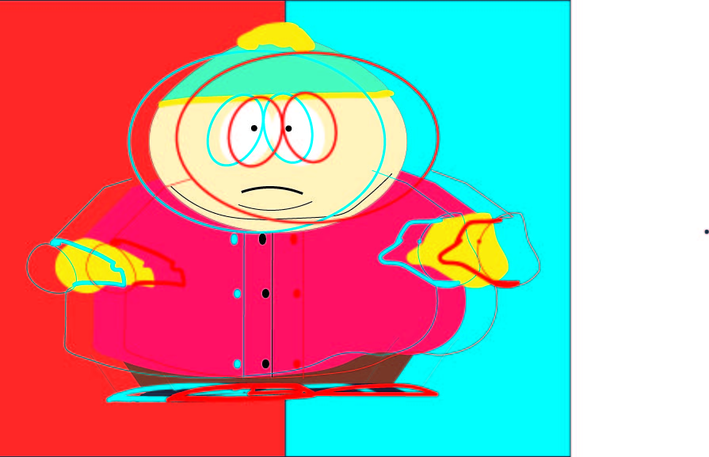

Home
About Me
Portfolio
SIP
Objectives
Contact
FAQ
The Future
Home
About Me
Portfolio
SIP
Objectives
Contact
FAQ
The Future
Home
About Me
Portfolio
SIP
Objectives
Contact
FAQ
The Future
Home
About Me
Portfolio
SIP
Objectives
Contact
FAQ
The Future
Understand inbound marketing and SEO strategies based on evolving trends in the market.
My before-and-after Photoshop video shows how improving visual design can make content more engaging and effective for inbound marketing. The “before” version shows basic editing, while the “after” version shows stronger design choices like better color, layout, and image quality. These improvements reflect how high-quality visuals help attract viewers and support modern SEO and marketing strategies that focus on user experience and engaging content.
Create content that fosters the growth and engagement of a targeted audience.

The infographic is Elden Ring and why people should play it was created with Photshop and uses AI generator for some of the elements.
Design and implement digital marketing strategies that follow branding guidelines.

Tech start up brand Cloud Tech was dirived from my Cloud brand aparrel and utlizes a different scheme to represent a tech company.

Food truck was created in Photoshop and utilizes color schemes and a logo/ brand created by me.
Identify basic KPIs (Key Performance Indicators) through analytics for conversion optimization.
My Colorado weather video shows how I can use the analytics tools on platforms where the video is posted to track basic KPIs. Features like views, watch time, and engagement allow me to see how audiences interact with the content. Tracking these metrics helps identify what performs well and can be used to improve content and optimize conversions.
My video about traps that online college students might fall into shows how I can use the analytics tools on the platforms where it is posted to track basic KPIs. By monitoring metrics like views, watch time, click-through rates, and audience engagement, I can see how viewers respond to the content. These insights help identify what attracts and keeps viewers’ attention, which can guide improvements that support conversion optimization.
My video about switching from a small screen to a larger screen when an email is too intense to view on mobile demonstrates how I can use analytics tools on the platforms where the video is posted to track basic KPIs. By reviewing metrics such as views, watch time, click-through rates, and audience engagement, I can measure how viewers interact with the content across different devices. These platform insights help identify patterns in user behavior and can be used to improve content and support conversion optimization.
Cultivate leadership qualities through the development and management of marketing campaigns.

Magazine mockup taking the Cloud logo and using a mock-up from Freepik.com to creat the magazine look.
Develop the ability to work with standard and emerging platforms used in the industry for digital advertising.

Underwater Composite is a variety of images complied into one photo, with this version I used about 7-10 photos and compiled them in Photoshop.

Animated Charater was a creation with shapes and line in Photoshop directly from thought and creation.

Vector Mask of a cat was created in Illustrator and creation of it was referenced from images of Egyptian cats and designs on their paintings.

Drawings of fruit was created in Photoshop and real fruit was used as refence for the creation.

Birthday Poster was created in Photoshop and 3D elements were used to make the balloons pop out.

Cartman was drawn only using the shapes tool in Illustrator. It was copy and pasted a few times with different elements to give it a sort of 3D effect.

VFX of a deer created with Illustrator.
@Mercer Design The links to all of my Socials are found below.